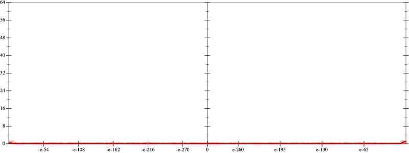
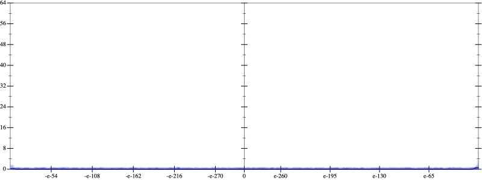
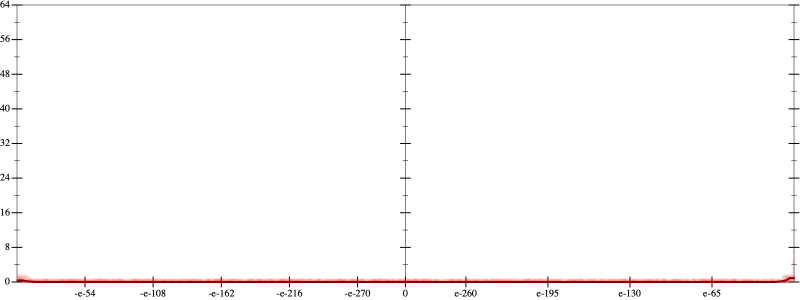
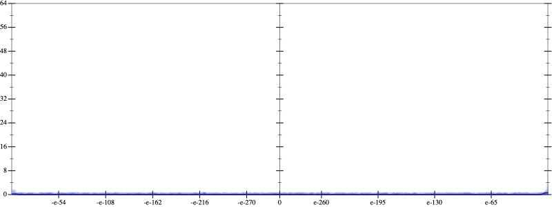

Initial program 0.0
\[\left(\left(\left(\left(\left(\left(\left(\left(1.0 + -9.0 \cdot x\right) + 18.0 \cdot \left(x \cdot x\right)\right) + -14.0 \cdot \left(\left(x \cdot x\right) \cdot x\right)\right) + 5.25 \cdot \left(\left(\left(x \cdot x\right) \cdot x\right) \cdot x\right)\right) + -1.05 \cdot \left(\left(\left(\left(x \cdot x\right) \cdot x\right) \cdot x\right) \cdot x\right)\right) + 0.116667 \cdot \left(\left(\left(\left(\left(x \cdot x\right) \cdot x\right) \cdot x\right) \cdot x\right) \cdot x\right)\right) + -0.007143 \cdot \left(\left(\left(\left(\left(\left(x \cdot x\right) \cdot x\right) \cdot x\right) \cdot x\right) \cdot x\right) \cdot x\right)\right) + 0.000223 \cdot \left(\left(\left(\left(\left(\left(\left(x \cdot x\right) \cdot x\right) \cdot x\right) \cdot x\right) \cdot x\right) \cdot x\right) \cdot x\right)\right) + -3 \cdot 10^{-06} \cdot \left(\left(\left(\left(\left(\left(\left(\left(x \cdot x\right) \cdot x\right) \cdot x\right) \cdot x\right) \cdot x\right) \cdot x\right) \cdot x\right) \cdot x\right)\]
Applied simplify0.0
\[\leadsto \color{blue}{\left(\left(\left(\left(x \cdot x\right) \cdot 0.116667\right) \cdot \left(\left(x \cdot x\right) \cdot \left(x \cdot x\right)\right) + \left(\left(x \cdot x\right) \cdot \left(x \cdot x\right)\right) \cdot \left(-1.05 \cdot x + 5.25\right)\right) + \left(\left(x \cdot -9.0 + 1.0\right) + \left(x \cdot x\right) \cdot \left(-14.0 \cdot x + 18.0\right)\right)\right) + \left(\left(\left(-0.007143 \cdot x\right) \cdot \left(x \cdot x\right)\right) \cdot \left(\left(x \cdot x\right) \cdot \left(x \cdot x\right)\right) + \left(\left(\left(x \cdot x\right) \cdot \left(x \cdot x\right)\right) \cdot \left(\left(x \cdot x\right) \cdot \left(x \cdot x\right)\right)\right) \cdot \left(-3 \cdot 10^{-06} \cdot x + 0.000223\right)\right)}\]
Taylor expanded around 0 0.0
\[\leadsto \left(\left(\left(\left(x \cdot x\right) \cdot 0.116667\right) \cdot \left(\left(x \cdot x\right) \cdot \left(x \cdot x\right)\right) + \left(\left(x \cdot x\right) \cdot \left(x \cdot x\right)\right) \cdot \left(-1.05 \cdot x + 5.25\right)\right) + \left(\left(x \cdot -9.0 + 1.0\right) + \color{blue}{\left(18.0 \cdot {x}^{2} - 14.0 \cdot {x}^{3}\right)}\right)\right) + \left(\left(\left(-0.007143 \cdot x\right) \cdot \left(x \cdot x\right)\right) \cdot \left(\left(x \cdot x\right) \cdot \left(x \cdot x\right)\right) + \left(\left(\left(x \cdot x\right) \cdot \left(x \cdot x\right)\right) \cdot \left(\left(x \cdot x\right) \cdot \left(x \cdot x\right)\right)\right) \cdot \left(-3 \cdot 10^{-06} \cdot x + 0.000223\right)\right)\]
Applied simplify0.0
\[\leadsto \color{blue}{\left(\left(\left(x \cdot x\right) \cdot \left(18.0 - 14.0 \cdot x\right) + -9.0 \cdot x\right) + \left(1.0 + {\left(x \cdot x\right)}^{\left(3 + 1\right)} \cdot \left(x \cdot -3 \cdot 10^{-06} + 0.000223\right)\right)\right) + \left(\left(x \cdot x\right) \cdot \left(x \cdot x\right)\right) \cdot \left(\left(\left(x \cdot 0.116667\right) \cdot x + \left(5.25 + x \cdot -1.05\right)\right) + \left(x \cdot x\right) \cdot \left(-0.007143 \cdot x\right)\right)}\]
- Using strategy
rm Applied add-exp-log0.0
\[\leadsto \left(\left(\left(x \cdot x\right) \cdot \left(18.0 - 14.0 \cdot x\right) + -9.0 \cdot x\right) + \left(1.0 + {\left(x \cdot x\right)}^{\left(3 + 1\right)} \cdot \left(x \cdot -3 \cdot 10^{-06} + 0.000223\right)\right)\right) + \left(\left(x \cdot x\right) \cdot \color{blue}{e^{\log \left(x \cdot x\right)}}\right) \cdot \left(\left(\left(x \cdot 0.116667\right) \cdot x + \left(5.25 + x \cdot -1.05\right)\right) + \left(x \cdot x\right) \cdot \left(-0.007143 \cdot x\right)\right)\]
Applied add-exp-log0.0
\[\leadsto \left(\left(\left(x \cdot x\right) \cdot \left(18.0 - 14.0 \cdot x\right) + -9.0 \cdot x\right) + \left(1.0 + {\left(x \cdot x\right)}^{\left(3 + 1\right)} \cdot \left(x \cdot -3 \cdot 10^{-06} + 0.000223\right)\right)\right) + \left(\color{blue}{e^{\log \left(x \cdot x\right)}} \cdot e^{\log \left(x \cdot x\right)}\right) \cdot \left(\left(\left(x \cdot 0.116667\right) \cdot x + \left(5.25 + x \cdot -1.05\right)\right) + \left(x \cdot x\right) \cdot \left(-0.007143 \cdot x\right)\right)\]
Applied prod-exp0.0
\[\leadsto \left(\left(\left(x \cdot x\right) \cdot \left(18.0 - 14.0 \cdot x\right) + -9.0 \cdot x\right) + \left(1.0 + {\left(x \cdot x\right)}^{\left(3 + 1\right)} \cdot \left(x \cdot -3 \cdot 10^{-06} + 0.000223\right)\right)\right) + \color{blue}{e^{\log \left(x \cdot x\right) + \log \left(x \cdot x\right)}} \cdot \left(\left(\left(x \cdot 0.116667\right) \cdot x + \left(5.25 + x \cdot -1.05\right)\right) + \left(x \cdot x\right) \cdot \left(-0.007143 \cdot x\right)\right)\]
 
